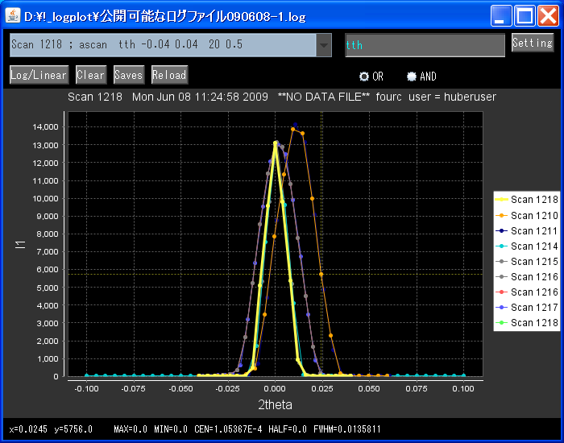
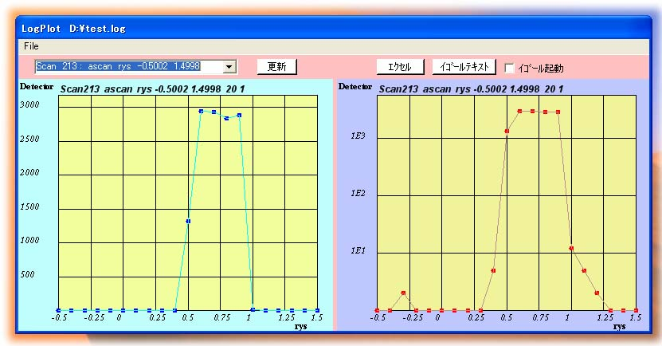

★ SPECが出力するログファイルから選択したスキャンをグラフ化します。
★ グラフに表示したスキャンをEXCELまたはIGORに出力します。
★ BL19B2,BL46XUのSPECログファイル(Tera termログファイル)に対応しています。
★ マウス操作によりサイズの拡大・縮小ができます。
(標準コマンド：ascan,a2scan,マクロコマンド：refscan,rockscan等)
Visual Basic版LogPlotに新機能を追加しています。
コマンド追加時にも対応可。

現在、BL19B2およびBL46XUで使用されているソフトウェアです。
Visual Basicで作成しております。

★ バク、追加してほしい機能があればご連絡下さい。